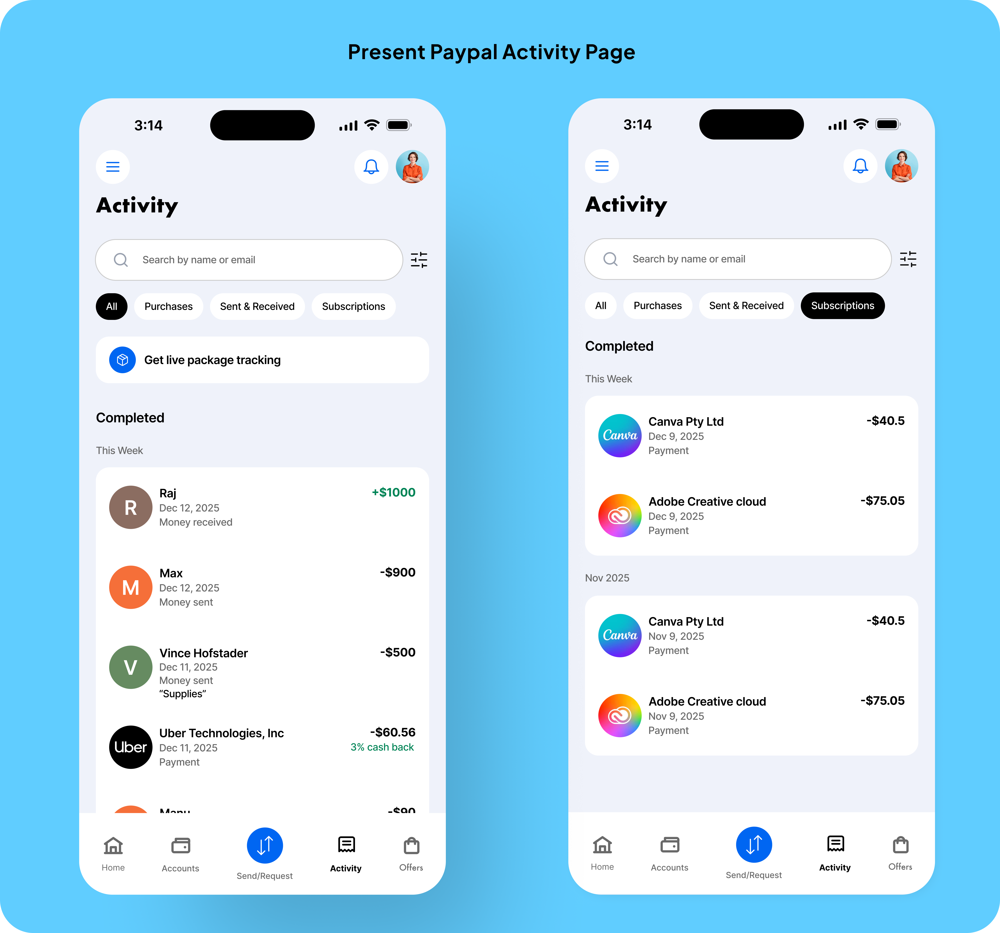

01 — The Problem
A feed that treats every transaction the same way.
Problem Statement
For freelancers using PayPal personal, there is no way to organize transactions by intent.
The feed is chronological by design. Useful for confirming a payment went through. Less useful for understanding what your side income actually looks like.

The current PayPal Activity page — with predefined filters.
200M+
PayPal accounts globally, many used for side income without a business account
8–10
Freelancers and small-business owners interviewed during early research
3rd-party
Most participants relied on a spreadsheet or another app to make sense of PayPal